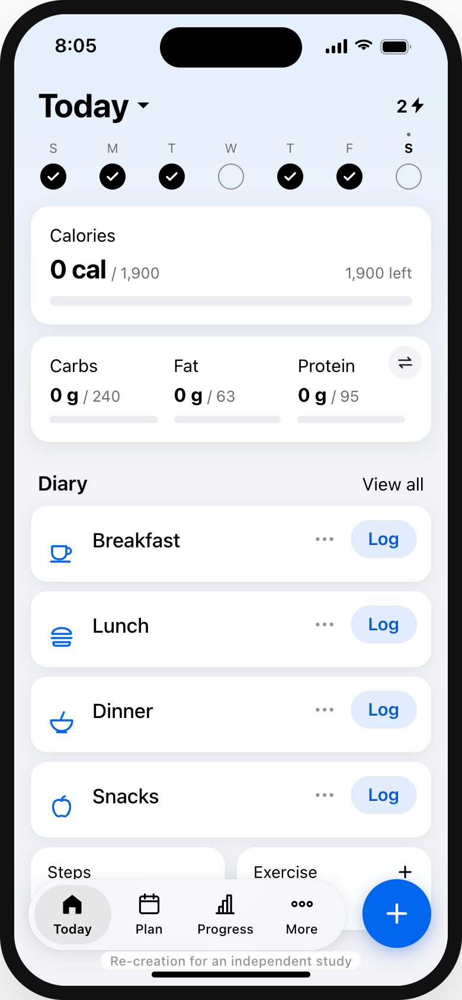
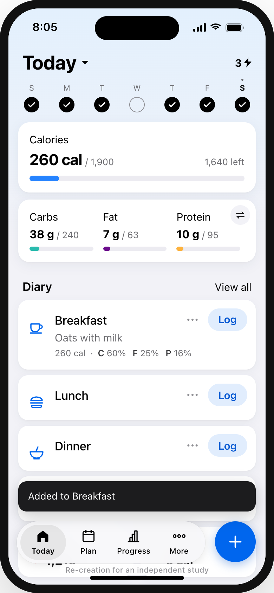
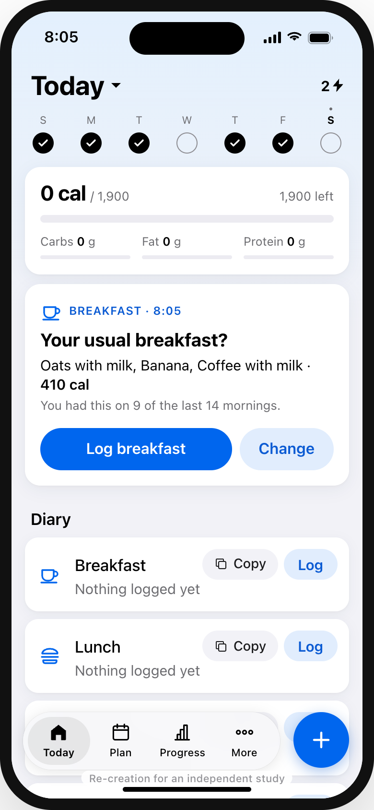
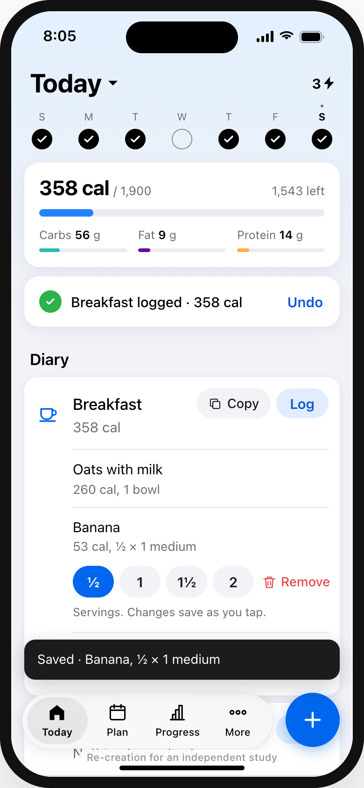
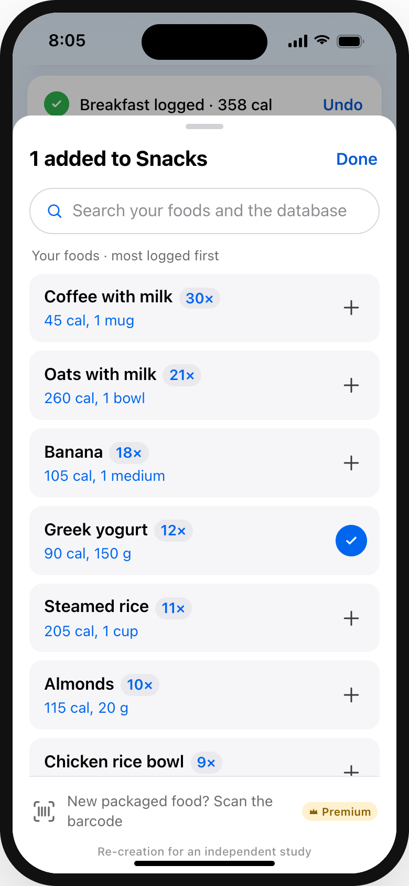
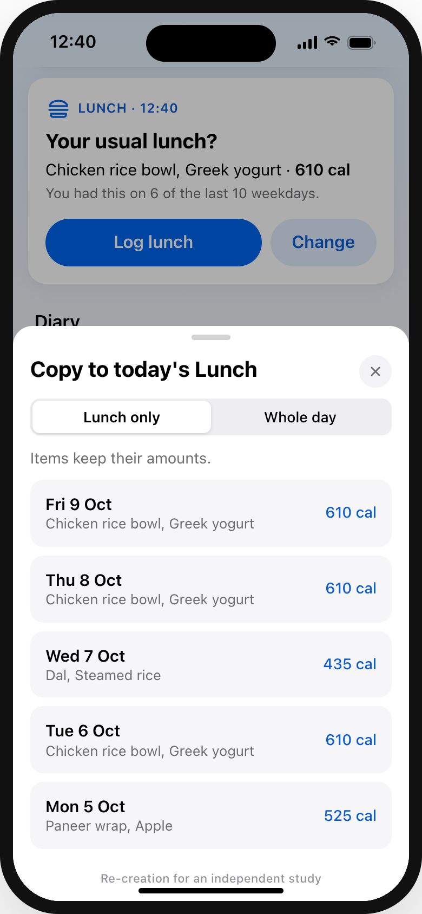

People stop logging food because it feels tedious, and logging often is what predicts results. In 145 recent App Store reviews rated one to three stars, 42 blamed a redesign that made logging slower and 15 named the paywalled barcode scanner. Most meals are repeats, so this makes them one tap and puts the diary back on the home screen. Camera tools stay Premium.
Independent study by Mitul Vaghasiya, not affiliated with MyFitnessPal. Every screen below is my re-creation in MyFitnessPal’s visual style, based on its App Store screenshots (10 Oct 2026) and the public images listed in references/. They are not screenshots of the real app.
Re-created in the real app’s style. Where no public image of a state exists, it follows reviews and help pages, as noted in the case study.

1The home screen leads with totals, a Premium card and progress. The diary, used several times a day, is at the bottom behind “View all”.
Frequency-of-use ordering
2One food at a time, and each save returns to the top of Today, as reviewers describe. Three foods means three trips.
Preserve the user’s contextThe same moment, in 4 screens.

1At 8 am the diary offers the breakfast you had on most recent mornings, with its items and total. Log it, or change it first.
Recognition over recall
2Serving chips open under the entry and save as you tap. The screen doesn’t move.
User control and freedom
3The add sheet ranks your own foods by how often you log them. Barcode scan stays Premium, as one quiet line.
Efficiency of use
4Copy one meal or a whole day from any recent day. Items keep their slots and amounts, and Undo is always there.
Support habitual behaviourDoes one-tap logging make people stop checking what they log, or stop seeing a reason to upgrade? If 3 of 5 testers say either, the idea needs rethinking.